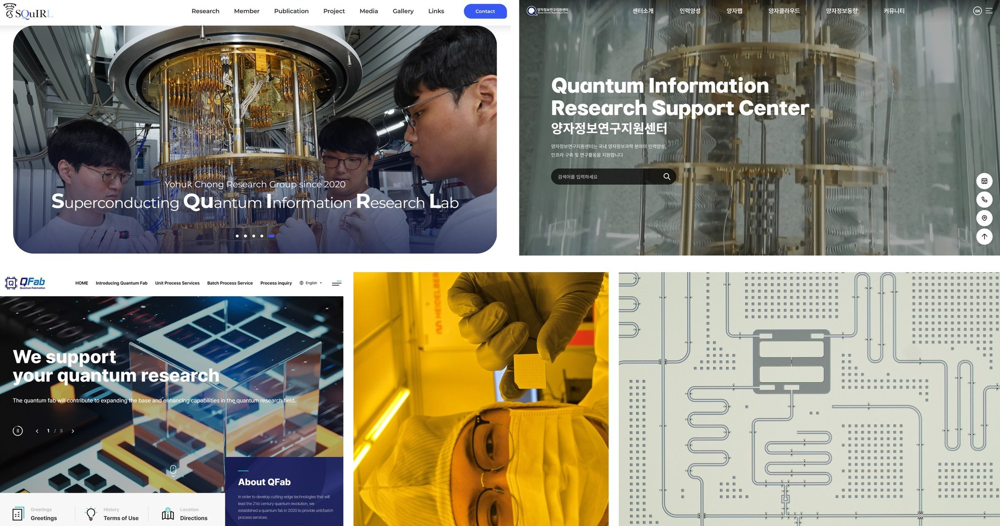

Abstract
- 1Department of Quantum Information Engineering, Sungkyunkwan University, Suwon 16419, Korea.
- 2SKKU Advanced Institute of Nano Technology (SAINT) and Department of Nano Engineering, Sungkyunkwan University, Suwon 16419, Korea.
Our team develops superconducting devices and full-stack systems for quantum information technology. Our research includes superconducting qubits for quantum computing (QPUs), traveling-wave parametric amplifiers (TWPAs) for precision quantum measurement, and superconducting nanowire single-photon detectors (SNSPDs) for optical quantum information processing. The strength comes from QFab, a state-of-the-art superconducting device fabrication facility that serves as a superconducting qubit foundry for research and development. In addition, a government-funded initiative, QCenter, aims to foster the Korean quantum research community by supporting student and postdoctoral exchanges and by building networking and education with the quantum industry to bridge academia and research community. Systematic education from the undergraduate to the graduate level in department of quantum engineering forms the backbone of SKKU Quantum Initiative, in line with our quantum education and training strategy. In this presentation, I will briefly summarize superconducting quantum technology activities at SKKU in general.
